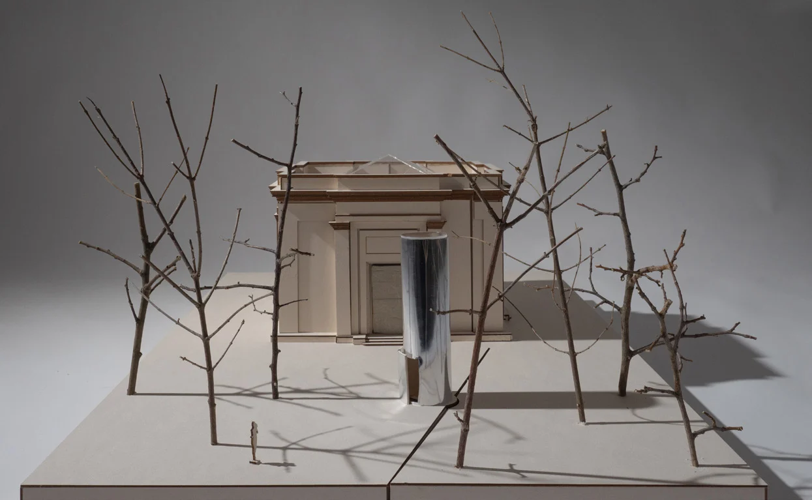
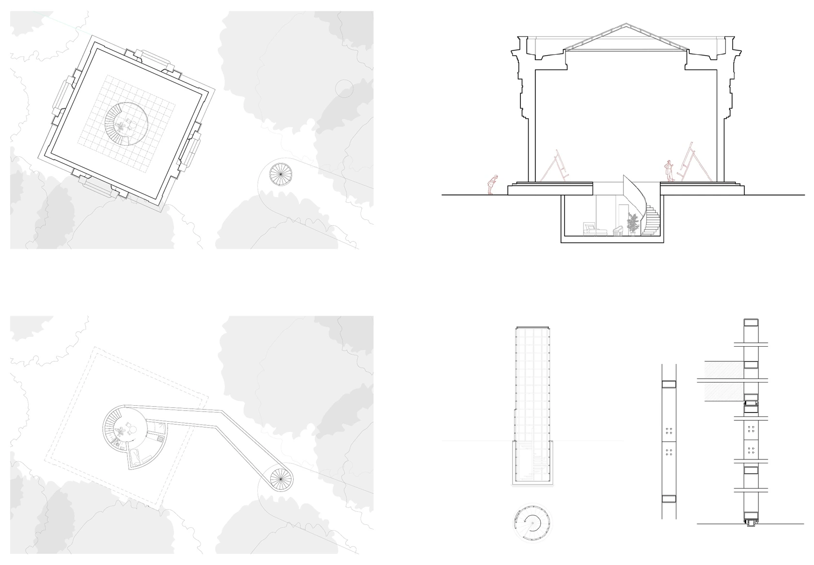
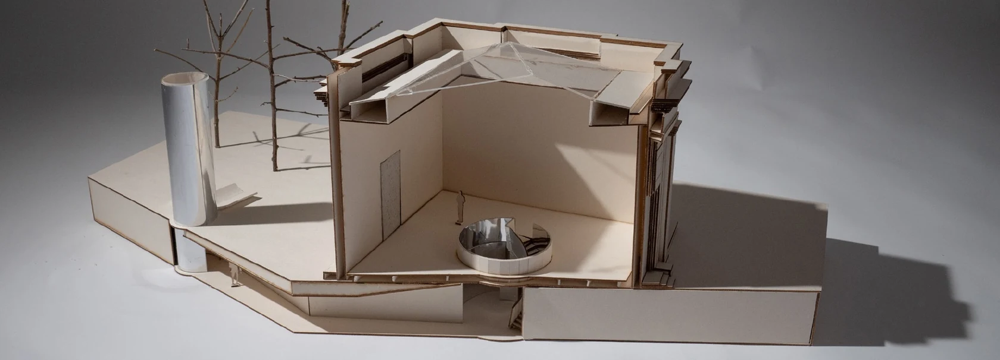

Studienprojekt · Weiterbauen im Bestand
Deine Gunst der Kunst
Ein spiegelnder Zylinder und eine Wendeltreppe führen unter die Erde. Von dort gelangt man über eine zentrale Treppe wieder hinauf in den bestehenden, von Kunstschaffenden betriebenen Pavillon.

- Kontext
- Hochschule München · Studienprojekt
- Semester
- Sommersemester 2024
Die Zeichnung
Die Zeichnungen zeigen, wie der unterirdische Zugang, das Ausstellungsfoyer und der bestehende Pavillon darüber miteinander verbunden sind.

Zeichnung vergrößernDer Raum
Im Schnittmodell wird sichtbar, wie die neue Wegeführung an den bestehenden Pavillon anschließt.
